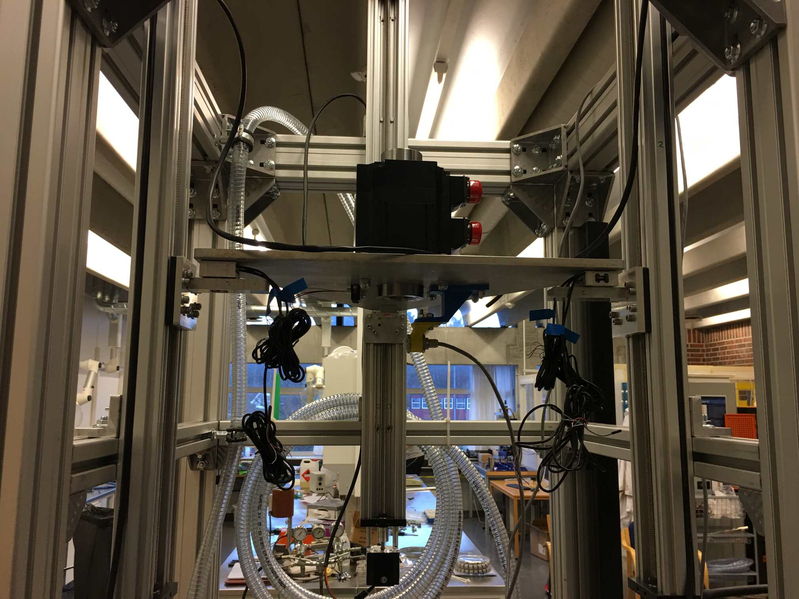
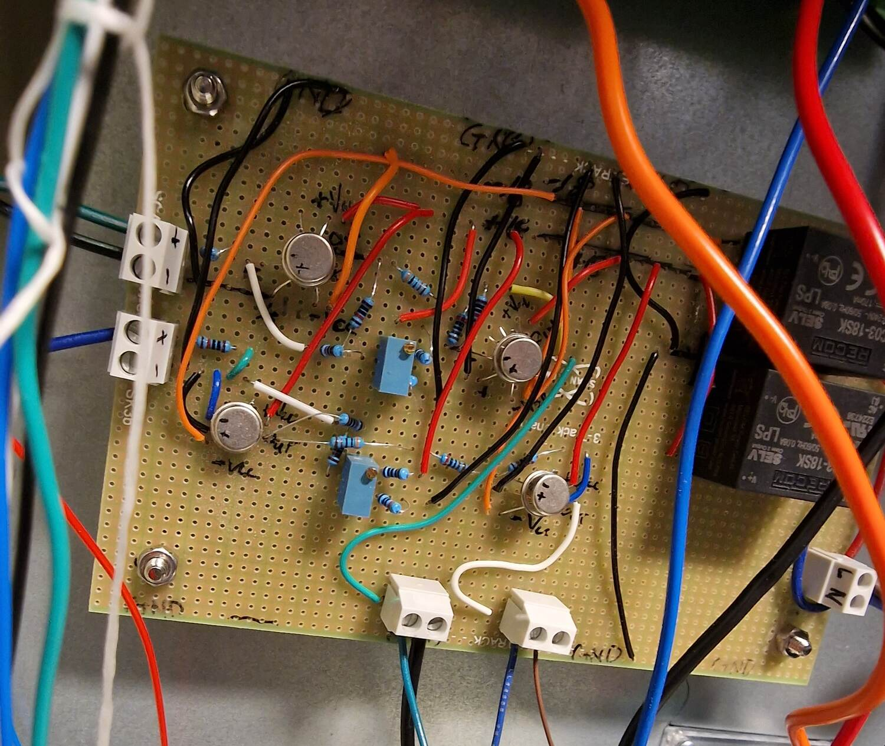
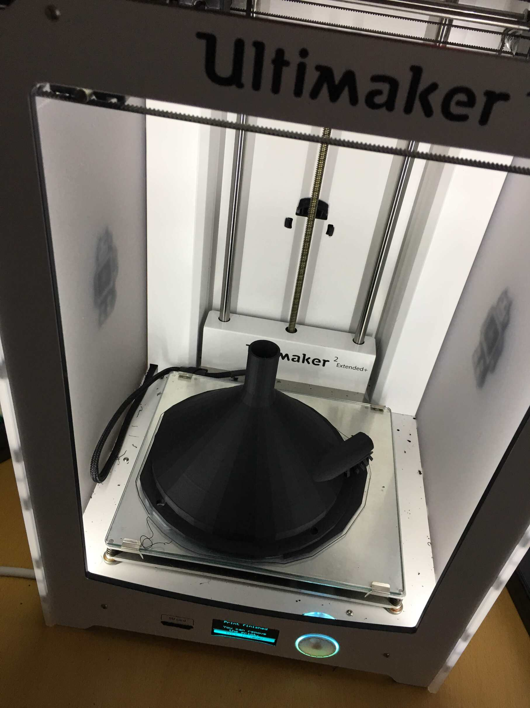

Andrew Holsaeter
R&D Engineer specializing in offshore drilling automation
Drillbotics
2017
Size: 7
Budget: $200,000
A university competition to build a completely autonomous lab-scale drilling rig.
UiS Drillbotics This was the project that sparked my love for electronics, programming, and robotics. In my last semester of my masters degree in Petroleum Engineering, I blindly signed up to be the last member of my universities Drillbotics team and was handed the role of software/hardware programmer which to my surprise, no one else wanted. What followed was a semester full of all-nighters, hair pulling, and constant confusion but I loved every second. In the end, an unfortunate last minute switch to a different stabilizer resulted in failed pipe fittings and we finished tied for 3rd.
×
Everyone has a beginning. And like many, this was mine. An LED, a 220 ohm resistor, and
an arduino. And no doubt that LED was proudly having it’s brightness sweeping from low
to high.
The next stage was controlling a higher voltage pump using a relay.
The shell of the rig was in the meantime being constructed.
1 month in and my circuitry/electronics/coding was already being pushed to
control the 3 stepper motors that would consist of the entire hoisting. Finally getting
them to move was such a great feeling.
Adding the 2 other stepper motor drives, 3 push stops (that would later be used as
calibration end-stops), and a failed IR range finder for height measurements.
The 2nd to last piece of the puzzle was the torque sensor. We splurged a significant
amount of the budget on a very nice non-contact torque sensor shown in the bottom right
as the black box.
The competition drillbit was provided to us by the committee and attached is a 3D
printed stabilizer prototype that a teammate designed and printed out.
The final piece of the puzzle. The hollow shaft servo motor finally arrived.
And it attached in position.
It was a real team effort.
The complete mess of wires that would haunt my life for the next 2 months.
But this was it all tidied up (aka hidden).
The aftermath of an exciting moment when a short almost brought the project (and
building) to an end.
Everything basically all setup.

Another thing we splurged the budget on was getting the previous 3D printed stabilizers
professionally CNC’d in metal. These are them attached to a donated drillbit loaned to
us so that we didn’t have to damage the competition bit by using it.
Aftermath of another fun moment when I accidentally forgot how electricity worked and
shorted 400V 3-phase power through a multimeter in amperage mode…
Some test holes we made with cement we mixed. For the competition, the committee sent us
a block comprised of unknown layers that we would have to drill through without any
intervention and be tested on how the system reacted.
The competition required using 1 meter of thin aluminum “drillpipe” between the topdrive
and bottom hole assembly which begins to demonstrate the difficulty of this competition
and drilling in and of itself.

The night before the competition. An unfortunate last minute switch to a different
stabilizer resulted in failed pipe fittings and we finished tied for 3rd.

This is the front end control panel of the drillbotics rig. Apart from the team logo
in the bottom left and drillbit image in the top right, everything is my design and
implementation. This was my first ever HMI/GUI and I quite like the no flash basicness
to it (as if my skills at the time could have added any style to it).
❮
❯
1 / 4
1 / 4
1 / 4
1 / 4
1 / 4
1 / 4
1 / 4
1 / 4
1 / 4

1 / 4
1 / 4
1 / 4
1 / 4
1 / 4
1 / 4
1 / 4
1 / 4
1 / 4
1 / 4
2 / 4
Distributed Drilling Control
2021-2022
Size: 5
Budget: $~250,000
This project aimed to test and validate a completely new and innovative way of mitigating drillstring vibrations. But in order to test that, a physical drilling simulator needed to be built around it.
Main Development Engineer Design, construction, and full-stack programming.
×
The schematic representation of the field-scale damping non-rotating sleeve that our
chief scientis created. This would be what I needed to prototype into a lab-scale size.
This schematic I made shows an overview of the complete lab-scale setup. The "Damping
sub" component is what we are prototyping. The Drill-string 1 and 2 components are for
recreating a full-scale drillstrings elasticity and friction forces (in order to
recreate the problem we are trying to solve). The 3 middle components are mounted on
linear rails and pushed via the "Top drive and drawworks" while the "Bit rock
interaction" axial movement is set based on a simple bit-rock that takes RPM and Weight
on Bit (the force measured by the load cell), and outputs ROP (rate of penetration).
A more detailed schematic I made of the drillstring component. The piano string has the
purpose of recreating the torsional elasticity that a very long drill-string
would have, which would otherwise be impossible to recreate in a limited laboratory
space (If I remember correctly, I calculated that the lab-scale drillpipe would have to
be the diameter of a human hair to recreate the same slenderness ratio of a full-scale
drillstring). The linear spring seeks to accomplish a similair effect in the axial
direction. Frictional force can than via an actuator in order to introduce vibrations
and stick-slip which is what our prototype seeks to improve.

A closer look at the linear spring concept which was a cool idea our chief scientist
initially suggested to mimic a drillstrings
axial elasticity while still transferring the rotational movement. I found these perfect
linear springs, shown in the top right, which are housed inside 2 combined 3D pieces
on the right side pipe that I designed and printed. These allow the left “drillstring”
to push the right “drillstring” to the right via the springs causing some elasticity
while still maintaining the rotation between the modules.

A screenshot from my published paper that shows the schematics of the other 3 modules I
designed and created.
Testing out the axial movement before I mount the "topdrive" motor

These were the first renditions of the magnet holder which I designed and printed out.
We wanted to see e.g. the optimal number of magnets in circumference, diameters,
tolerances, as well as the attachment method taking several iterations.

An early rendition with 10 magnets in circumference where you can also see the hole for
the set screw I used to keep the magnet brake in place. Eventually we settled on
slightly stronger magnets, which were a bit wider, so I reduced to 8 magnets in a “row”
with 5 of these rows in total.

Here you can see the finalized magnet brake with the tube/sleeve it can slide into to
vary the braking effect. Later I would install an actuator to the sleeve so that it
could be slid over and out of the rotating magnetic brake with software.
Some of the other 3D models I designed and printed for this project.
Which you can see 3 of in this in this picture. The stepper motor holder, the friction
applier and support, and the axial spring system in the top right.
Felt like I was breaking a law when doing this but I needed to test the two different
servo motor modes. One was in RPM mode acting as the drilling top-drive/rotation while
the other was in torque mode acting as the formation rock fighting back against being
drilled.
This photo shows some of my progession into electrical management. I discovered these
black screw terminals which I was quite happy with as they are a nice middle ground
between wire nuts/wagos and soldering together ports on both sides. From the top, you
see the friction stepper motor, 2 encoders, and the friction load cell. Due to having 2
encoders, I needed to upgrade from the normal Arduino Uno to the Mega as the 2 encoders
meant I needed atleast 4 interupt pins to accurately keep track of RPMs.

During this project, my group acquired a MIPEC 4MILL300ATC PCB milling machine. Which is
of great use in Norway, where custom PCB’s will take weeks to ship and cost more in
shipping than the PCB’s themselves.

And the same circuit as a CNC’d double sided circuit.
The actuator I threw together to control the magnets sliding into and out of the tube
complete with an endstop so I could calibrate after every power down in order to know
where it was.

One day I will learn that you always need three times the size of an electric box as you
think. These are the load cell amplifiers which I wanted as close to the load cells as
possible as there was a giant EMI generator in the form of a 750W servo motor very
close to them.
A screenshot of a video I made for our our final presentation to industry partners which
shows the control panel I made to controll everything. (The blue zip tie was just for
demonstration purpose so people could see the stepper motor moving and pulling the
friction force piece into the interia disk).
❮
❯
3 / 4
3 / 4
...

Which was great because I needed to create another circuit that would take the two
+/- 8V analog signals from the servo drive and output the necessary 0-5V in order to
not destroy the Arduino. I had already made one manually as seen here.
3 / 4
3 / 4
Flow Rate Out Sensor: Proof of Concept
2018
Size: 2
Budget: $~50,000
"The Macondo blowout in 2010 was caused by a series of events, and a main critical factor was the lack of accurate flow measurement as pointed out in the investigation that followed. The commonly used measurement device, the flow paddle, used on Deepwater Horizon, has an accuracy of 10%. This technology is still preferred due to the lack of alternatives."
Thus, this project aimed to test a new and innovative design to replace the flow paddle which could have helped preventing the disaster of 2010.
Flow Rate Out Sensor: (POC) I came into this project after an initial build from our chief scientist. He found the torque measurement wasn't sufficient enough as well as a problem with the collecting funnel which needed to be addressed. I installed a new high precision torque sensor along with a 12-bit ADC, cleaned up/simplified some of the electrical work and made progressive improvements to the collecting funnel and circulation system. The successful results of this project led to a follow up verification project being awarded as well as a patent.

×
This was the initial concept and design by our chief scientist Eric Cayeux. The main
idea is to spin a measuring wheel that has 4 "vanes" supporting them at a constant RPM
and have a fluid enter in between those discs. These spinning vanes will expel the
incoming fluid, applying a force on the vanes due to the coriolis effect;
Which in theory is linearly proportional to the amount of mass entering the measuring
wheel per time and can be indirectly measured via the torque on the rotating axle.
There are many benefits to this design, among them the ability to pick up on small flow
rates (essential for kick detection during the most vunerable drilling process of pipe
connection when flow is paused), having the measurement done at atmospheric conditions,
and the independence of gas/foaming effects that plague the standard vibrating Coriolis
Flow meter.
This shows the fundamental piece behind the concept of this new flow sensor. The 2 thin
discs have 4 “vanes” supporting them which expel the incoming fluid, applying a force on
the vanes due to the coriolis effect, which in theory is linearly proportional to the
amount of mass per time and can be directly measured via the torque on the rotating
axle.
The initial design and build from our Chief scientist Eric Cayeux had no collecting
funnel and just sprayed fluid everywhere.

So we designed a 3D printed collecting funnel split into 8 sections (due to size
limitations of our 3D printer) and acrylic vertical walls. Went with a special ABS
plastic for improved water and fluid interaction but this made fine-tuning the printing
settings more difficult.
Mapping out the the acrylic vertical walls I needed to cut out.
Wondering why I never invested in a jigsaw before this.
The initial inlet funnel design demonstrating the tight margins and issues of alignment
that also needed to be addressed. Additionally a new inlet funnel needed to be designed
and printed that better improved the incoming fluid into the measuring wheel.
The new inlet funnel with the same special ABS plastic as the collecting funnel.

Both inlet and collecting funnel pieces assembled and topped off with a piece of acrylic
with a small hole cut out in the middle for the rotating axle.
One of the upgrades I was tasked with was installing a better torque sensor which I
coupled with a simple 12-bit ADC IC to improve the Arduino's normal 10 bit resolution.
Another improvement we wanted was to install an encoder to more reliably measure the
axle's RPM's which is shown here.
While the main HMI was done via a touch screen PC seen in the top, I did development,
programming, testing of that via my laptop and using C# WinForms.

More or less, the final version with all my upgrades that eventually gave us the data
and results that enabled us to be awarded funding for a further follow up project with
industry partners.
❮
❯
1 / 4
...
...
...
...
...
...
...

...
...
...
...
...
Flow Rate Out Sensor: Verification
2023-2024
Size: 5
Budget: $500,000
Following the success of the POC project, a new project was awarded to NORCE to develop a small~medium scale sensor that would go up to 200 l/min and test more fluids including actual drilling mud provided by industry partners.
Flow Rate Out Sensor: (Verification) This project was of particular enjoyment as I really got to combine all my fields of knowledge that I had been developing the past years. Docker, Python, electronics, databases, and machine learning modelling were all the things I got to use on this project.

{kind=link}
{kind=link}
{kind=link}
{kind=link}
{kind=link}
{kind=link}
{kind=link}
{kind=link}
×
For this medium scale prototype, we worked with another group in our company (Ullrigg
Testing Centre) that has much more advanced manufacturing skills in order to build the
sensor and parts. Here is what they built based on our specifications.
And this is it installed in our first on-site location. We would pump the fluid up
into our sensor prototype (yellow pipe), and then our sensor would collect that
fluid and empty into the collecting tank seen towards the right.
A video taken atop the scaffolding showing the sensor in action at a
very low RPM setting. Normally we rotate the disk at ~300 RPM as this is mandatory
to get the flow to enter turbulent flow as this is what will cancel out viscous
effects playing a part in the torque measurements. These high RPM’s splash fluid
everywhere, requiring a plastic cover over the sensor, but that makes it difficult
to film videos showing the sensor in action.
Our sensor, by design, makes turbulent flow which introduces air bubbles into a fluid.
During testing of Non-newtonian fluids (which most drilling muds are), these air bubbles
get suspended in the fluid and infamously cause Coriolis flow meters problems, which is
what we are using as reference to evaluate our prototype.
So we tried our best to agitate these bubbles out by jerry rigging an agitator onto our
collecting tank.
After initial experiments, we upgraded our design and eventually had to move locations
to another on-site facility
Our new setup involved a more complex flow line with convenient T-valves so that we
could easily divert and switch flow lines
And I finally learned to buy a big enough electric box (But actually I just recycled the
old box from our initial POC setup).

But in actually, our new PCB milling machine and my work with EAGLE CAD designing this
circuit vastly cut down the physical footprint of the circuitry.
Our new setup had a much improved agitator that required basically no zip-ties.
Adding in Xantham gum in order to create a “homemade” drilling mud that is
Non-Newtonian.
A better image of the foaming/bubble issue that could invalidate our reference
measurements taken from the Coriolis flow meter. Meaning even if our prototype
measurements were perfect, they would appear as bad because our reference measurements
were wrong.
However, our new flow system, tank, and agitator solution means we could remove most of
these bubbles in between experimental runs
Additionally, we have now tested with a major service company’s supplied mud they
actually use for drilling. And not surprisingly, they have developed fluid compositions
that don’t have this bubble/foaming problem.
❮
❯
...
...
...
...
...
...
...
...
...
...
...
...
...
DigiWells
2020-2028
Size: 30+
Budget: $9M
A long term center to develop new knowledge, methodologies, and innovative solutions to improve the well delivery process enabled by digitalization, new sensors, high speed telemetry, automation, and autonomy.
Microservices Our aim at NORCE with this center is to develop drilling automation based around microservices. I was responsible for building the entire microservice architecture from the ground up including installing the on-premis servers, creating the development environments, and complete setup of a Kubernetes production level cluster.
Publications
- Experimental Verification of Vibration Mitigation Through a Viscous Damping System Along the Drill String
- Development and Validation of a Rotating Wheel Coriolis Mass Flowmeter for Accurate Measurement of Drilling Fluid with No Pressure Loss
- Integration of Modeling and Drilling Incident Management of a Real-time Lab-scale Autonomous Drilling Rig